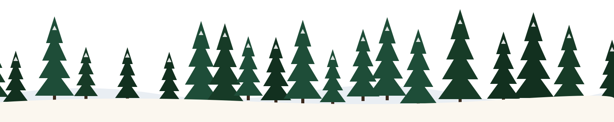

Feito à mão, em pequenas fornadas
O Natal tem cheiro de panetone saindo do forno
Somos uma confeitaria de família. De novembro a janeiro a cozinha só pensa em uma coisa: doces de Natal para a sua ceia, para presentear e para comer escondido antes da meia-noite.
— Miguel, Felipe e Gabriel
Quanto falta para o Natal
Encomende com antecedência: os panetones levam 3 dias para ficar prontos.
--dias
--horas
--min
--seg
Os mais pedidos
Catálogo completo
O que mais sai da nossa vitrine em dezembro
“A gente não vende doce. A gente vende aquele minuto de silêncio na mesa quando todo mundo prova.”Dona Cida, a avó que inventou o Panetone da Vó
Como fazer a sua encomenda
Escolha no catálogo
Coloque os doces na sacola. Dá para filtrar por categoria e buscar por ingrediente.
Confirme pelo contato
Mande uma mensagem com o dia de retirada. Respondemos em até 1 dia útil.
Retire quentinho
Na loja ou com entrega na cidade até o dia 24, às 15h. Depois disso, só no ano que vem!